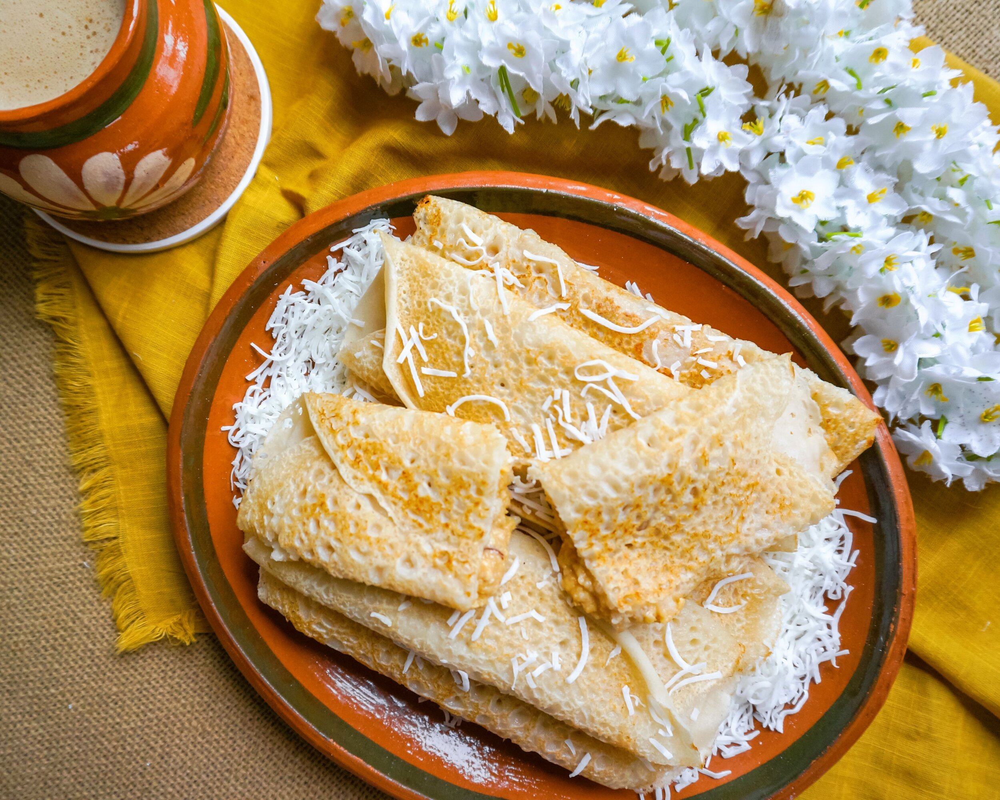

Patishapta

Description
Indulge in the sweet and delectable flavors of Bengal with Patishapta, a traditional Bengali dessert that is a must-have during winter festivals. Patishapta, meaning "crepe" in Bengali, is a delightful sweet treat that consists of thin crepes filled with a delightful mixture of coconut, khoya (reduced solidified milk), and jaggery. This cherished dessert is a staple during festivals like Poush Parbon and Makar Sankranti, bringing warmth and sweetness to the celebration of the harvest season.
Ingredients
- 1 cup refined flour (maida)
- 1/2 cup semolina (sooji)
- 1 cup milk
- 1/2 cup water
- 1/2 cup coconut (grated)
- 1/2 cup khoya (reduced solidified milk)
- 1/2 cup jaggery (grated)
- 1/4 teaspoon cardamom powder
- Ghee or oil for cooking
Steps
- In a mixing bowl, combine refined flour, semolina, milk, and water. Mix well to form a smooth batter. Let it rest for 30 minutes.
- In a separate bowl, mix together grated coconut, khoya, jaggery, and cardamom powder to make the filling.
- Heat a non-stick pan or a griddle over medium heat and lightly grease it with ghee or oil.
- Pour a ladleful of the batter onto the pan, swirling it to spread thinly and evenly.
- Allow the crepe to cook until the edges start to lift. Place a portion of the filling along one side of the crepe.
- Carefully fold the crepe over the filling to form a roll or a semi-circular shape.
- Cook until the crepe is golden brown on both sides. Repeat the process for the remaining batter and filling.
- Serve Patishapta warm, garnished with additional grated coconut or drizzled with jaggery syrup if desired.